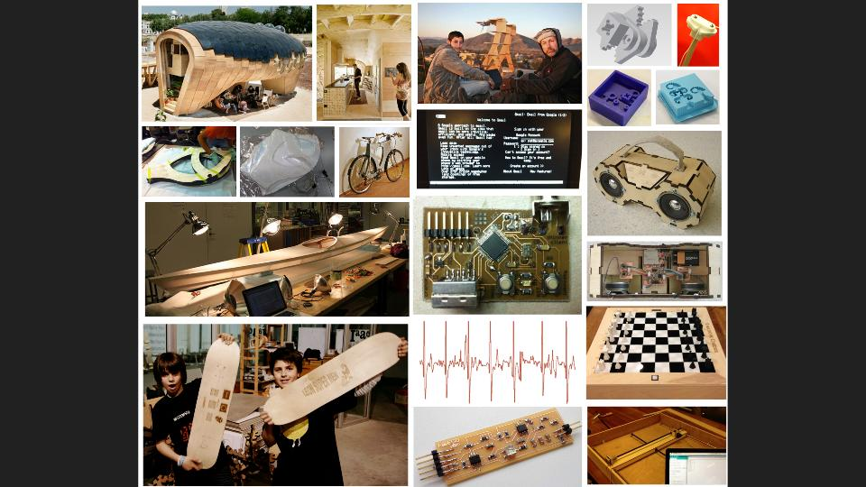
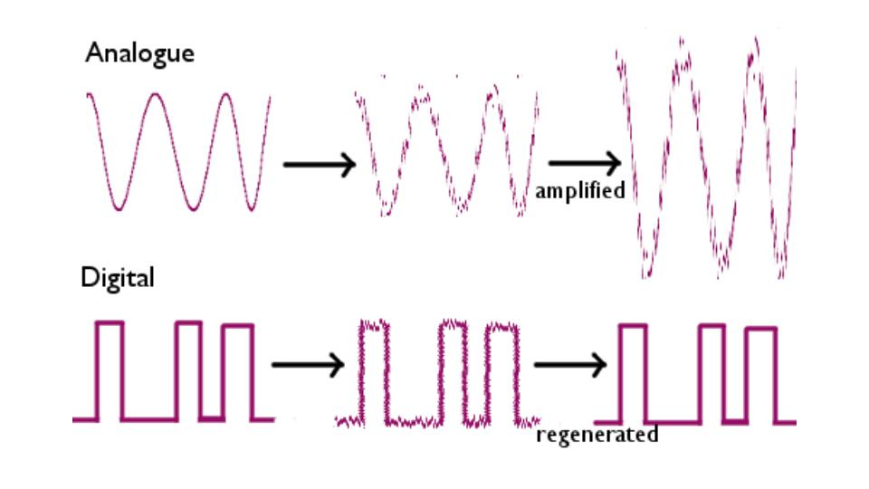
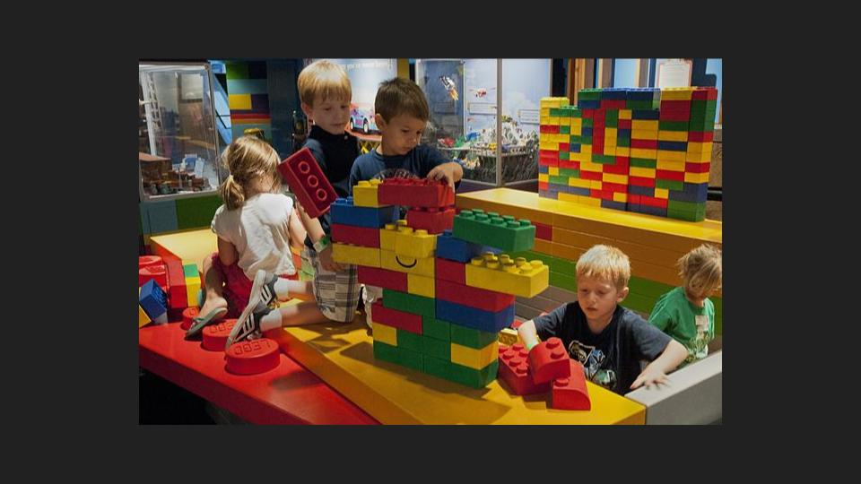

Introduction To FABLAB
Francisco Initiated me to the wonderful world of Fablab. He gave an overview of the working principles that are followed in the Fablabs across the globe. We were also briefed about the practices in MIT. Francisco gave us a birds eye view on the various apllications people across the world has developed using the Fablab facility.

The principles of digital and analog revolution were discussed, how the analog to digital conversion helps to restore a signal burried in noise and so on..

An introduction to Digital Fabrication was also given and how does it promise a better proccess in fabrication than the the existing techniques..

Francisco also briefed us about the idea behind Pre Academy, How it is different from the conventional Fab Academy course.. and its for,
Discussed also also the following..
He also made us reccall about the following online resources..
Inaguration of FABLAB TRIVANDRUM
Prof. Neil Gershenfeld, the Director of MIT's Center for Bits and Atoms Inagurating the Fablab Trivandrum. I was fortunate to be a part of this special event and meet the brain behind our FABLABS!! .

Toggle Menu
Preparing Notebook for The Academy
Francisco recommended that each student uses a A4 paper notebook with no detachable sheets and not to use sheets so as to avoid loosing the sheets. He explained
Preparing Laptops and Lab Computers
The tasks for the day is follows..
Assignment For the Day : Installing the Following Softwares
1. Installing “Terminal here” addon for Nautilus.
Command to install " Terminal here "
$ sudo apt-get install nautilus-open-terminal$ sudo nautilus -qRestart nautilus. After the restart, right click from the folder we waant to open terminal from.. thats it !!..
2. Fab Modules Compiled Version
The fab modules provide a set of software tools for personal fabrication, intended for use with machines common to fab labs.
It includes
Follow the Instructions in kokompe web site given below
http://kokompe.cba.mit.edu/
3. kokopelli retro (editing Neil’s circuit boards)
Install dependencies from kokompe web site
http://kokompe.cba.mit.edu/ make fabcd bin./kokopelli -r
4. Antimony
Antimony is a computer-aided design (CAD) tool from a parallel universe in which CAD software evolved from Lisp machines rather than drafting tables. Installing antimony has been a tedious process. To install antimony, we have to install all the dependencies.I had a tough time searching for the correct way to do it, bening a novice to linux it took a while for me to get it done after several attemts.
Note : After downloading Qt, right click on the downloaded file and set permision to run as executable file before attempting to install the same.
$ sudo apt-get install build-essential libpng-dev python3-dev libboost-all-dev libgl1-mesa-dev lemon flex sudo add-apt-repository ppa:ubuntu-toolchain-r/test sudo apt-get update sudo apt-get install gcc-4.9 g++-4.9 sudo update-alternatives --install /usr/bin/gcc gcc /usr/bin/gcc-4.9 60 --slave /usr/bin/g++ g++ /usr/bin/g++-4.9 $ git clone https://github.com/mkeeter/antimony $ cd antimony $ mkdir build$ cd build $ ~/Qt/5.5/gcc_64/bin/qmake ../sb.pro$ make -j8$ sudo make install $ ./app/antimony
Note :
I experice certain problems while using Antimony. The laptop hangs when ever an extrusion of solid objects are tried. I am yet to find a fix for this.
To learn More about Antimony
http://www.mattkeeter.com/projects/antimony/3/
5. Inkscape.
Inkscape is a professional vector graphics editor for Windows, Mac OS X and Linux. It's free and open source.
To learn More about Inkscape
https://inkscape.org/en/
6. OpenSCAD
OpenSCAD is a software for creating solid 3D CAD objects.Unlike most free software for creating 3D models (such as the well-known application Blender), OpenSCAD does not focus on the artistic aspects of 3D modelling, but instead focuses on the CAD aspects.OpenSCAD, unlike many CAD products, is not an interactive modeler. Instead it is something like a 2D/3D-compiler that reads in a program file that describes the object and renders the model from this file. This gives you (the designer) full control over the modelling process. This enables you to easily change any step in the modelling process. This enables you to make designs that are defined by configurable parameters.
To learn More about OpenSCAD
https://en.wikibooks.org/wiki/OpenSCAD_User_Manual
7. GIMP
GIMP is an acronym for GNU Image Manipulation Program. It is a freely distributed program for such tasks as photo retouching, image composition and image authoring.
It has many capabilities. It can be used as a simple paint program, an expert quality photo retouching program, an online batch processing system, a mass production image renderer, an image format converter, etc.
GIMP is expandable and extensible. It is designed to be augmented with plug-ins and extensions to do just about anything. The advanced scripting interface allows everything from the simplest task to the most complex image manipulation procedures to be easily scripted.
To learn More about GIMP
http://www.gimp.org/about/introduction.html
8. Cura
Cura is the companion software for Ultimaker, the 3D Printer.
https://ultimaker.com/en/cura-software/list
9. Arduino IDE.
Download the version 1.5.5 IDE and install.
To Run the software
sudo ./arduino
ATTINY addon for arduino IDE.
Follow the Instructions in tutorial section of Hi Lo Tech MIT Media Lab
http://highlowtech.org/?p=1695
10. Qcad.
QCAD is a free, open source application for computer aided drafting (CAD) in two dimensions (2D). With QCAD you can create technical drawings such as plans for buildings, interiors, mechanical parts or schematics and diagrams. QCAD works on Windows, Mac OS X and Linux. The source code of QCAD is released under the GPL version 3 (GPLv3), a popular Open Source license.QCAD was designed with modularity, extensibility and portability in mind. But what people notice most often about QCAD is its intuitive user interface. QCAD is an easy to use but powerful 2D CAD system for everyone. You don't need any CAD experience to get started with QCAD immediately. You can download QCAD today for free!
http://www.qcad.org/en/
11. Git
Git is a free and open source distributed version control system designed to handle everything from small to very large projects with speed and efficiency.
Git is easy to learn and has a tiny footprint with lightning fast performance. It outclasses SCM tools like Subversion, CVS, Perforce, and ClearCase with features like cheap local branching, convenient staging areas, and multiple workflows.
$ apt-get install git
12. Eagle
EAGLE, the Easy Applicable Graphical Layout Editor is a powerful PCB design software tailored to meet the needs of professional engineers, makers and those at school! For more than 25 years, EAGLE has been the PCB design tool of choice for hundreds of thousands of electronic design engineers and developers worldwide. With a large and active engineering and support community and an extensive ecosystem, EAGLE offers much more than pure circuit design.
To learn More about EAGLE
http://www.cadsoftusa.com/eagle-pcb-design-software/about-eagle/
13. KiCad EDA
A Cross Platform and Open Source Electronics Design Automation Suite. KiCad is an open source software suite for Electronic Design Automation (EDA). The programs handle Schematic Capture, and PCB Layout with Gerber output. The suite runs on Windows, Linux and OS X and is licensed under GNU GPL v2.
To learn More about KiCad EDA
http://kicad-pcb.org/about/kicad/
14. Wine
Wine is a free and open source compatibility layer software application that aims to allow applications designed for Microsoft Windows to run on Unix-like operating systems. Wine also provides a software library, known as Winelib, against which developers can compile Windows applications to help port them to Unix-like systems.It duplicates functions of Windows by providing alternative implementations of the DLLs that Windows programs call,and a process to substitute for the Windows NT kernel. This method of duplication differs from other methods that might also be considered emulation, where Windows programs run in a virtual machine. Wine is predominantly written using black-box testing reverse-engineering, to avoid copyright issues.
To learn More about Wine
https://en.wikipedia.org/wiki/Wine_(software)
15. Text Editor
GEDIT that comes preinstalled with Ubuntu is used as the default text editor.
To learn More about Wine
https://wiki.gnome.org/Apps/GeditToggle Menu
Creating Accounts
Todays task Franscisco gave us is to create the following accounts.This is for the proper organization and storage of our data and files and to keep the activities in sync.
My Fab Cloud Account
http://git.fabcloud.io/u/sarathsm My Fablabs.io Account
https://www.fablabs.io/users/4694 My Sketchfab Account
https://sketchfab.com/sarathsm
Creating Github Repositories
Git is a free and open source distributed version control system designed to handle everything from small to very large projects with speed and efficiency.
Git is easy to learn and has a tiny footprint with lightning fast performance. It outclasses SCM tools like Subversion, CVS, Perforce, and ClearCase with features like cheap local branching, convenient staging areas, and multiple workflows.
$ apt-get install git
Configuring username to Git
git config --global user.name "username" Configuring email to Git
git config --global user.email email@email.com Verify the git configuration information as shown below.
$ git config --list Create repository in Github for personal website
Head over to GitHub and create a new repository named username.github.io, where username is your username (or organization name) on GitHub. If the first part of the repository doesn’t exactly match your username, it won’t work, so make sure to get it right.Clone the created repo to our PC.
$ git clone https://github.com/username/username.github.io Open the folder and create index.html and create the first "Hello World!!" page. Let us see how to push this Add, commit, and push your changes
To add files
$ git add --all To Commit
$ git commit -m "Initial commit" To Push
$ git push -u origin master
https://pages.github.com/
HTTPS link vs SSH link
Creating SSH keys
https://help.github.com/articles/generating-ssh-keys/ Change from HTTPS to SSH
https://help.github.com/articles/changing-a-remote-s-url/
Documenting Fab Academy and Pre Academy
Francisco emphasised the Importance of documenting while you work.
Our Temporary documentation Index page: http://thebeachlab.github.io
Reference links to Learning HTML
https://www.edx.org/course/html5-part-1-html5-coding-essentials-w3cx-html5-1x Links to some HTML templates
http://startbootstrap.com/template-categories/all/
Photography
Great care has to be taken while taking pictures for documentation,some of the key aspects to be considered to get the best pictures are,
Toggle Menu
Time Management
The following points were discussed for the effective management of TIME..
Lab Cleanup & Inventory Management
Toggle Menu